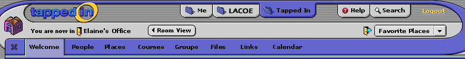

|  | |||||||||||||||||
|
Tapped In is the online workplace of an international community of education professionals. K-12 teachers and librarians, professional development staff, teacher education faculty and students, and researchers engaged in professional development programs and informal collaborative activities with colleagues. Tapped In is comprised of virtual "rooms" for courses, groups and individuals. Each room comes with communication tools (e.g., chat, private messaging, discussion boards) and support tools (e.g., file sharing, web links, calendars) to help you quickly and effectively plan and conduct online activities. In addition, directory tabs (like this one) allow you to easily access a directory of information about members, places, courses, groups, files, etc. available to all Tapped In members (the Tapped In tab), to members of particular "tenant" organizations, or just to you (the Me tab). Even when you're looking at an information tab like this, you are still in a room, and can continue talking with people in that room. The room that you are in is always listed at the top left, below the Tapped In logo. Feel free to explore, or drop by the TAPPED IN Reception and ask our HelpDesk Staff any questions that you might have!
|
|||||||||||||||||